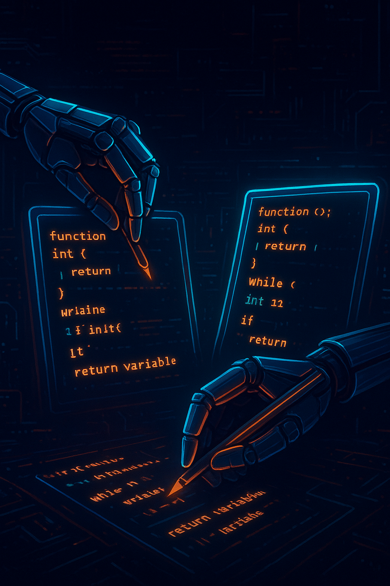

Meta
Programming
Presented by
Arnaud Buchholz
Presentation made with
Reveal.js
Agenda
### The **5 W** ||| |---|---| |**Who**|Me| |**When**|Over the last 5 months| |**Where**|The [`psbots`](https://github.com/ArnaudBuchholz/psbots) project| |**What**|**Manipulate** *transpiled* JavaScript through **Abstract Syntax Tree**| |**Why**|**Analysis** & **Optimization**| --- #### A **Brief** Introduction To `psbots` * PostScript **interpreter** * Developped in **TypeScript** *(no dependencies)* --- ### **Meta**Programming According to [wiki](https://en.wikipedia.org/wiki/Metaprogramming) > Metaprogramming is a computer programming **technique** in which computer programs have the ability to treat other programs as their **data**. --- ### Analysis [Sources](https://github.com/ArnaudBuchholz/psbots/blob/main/docs/engine/sources.md) --- ### Optimization [Ideas](https://github.com/ArnaudBuchholz/psbots/blob/main/docs/engine/Optimizations.md) --- #### Demo